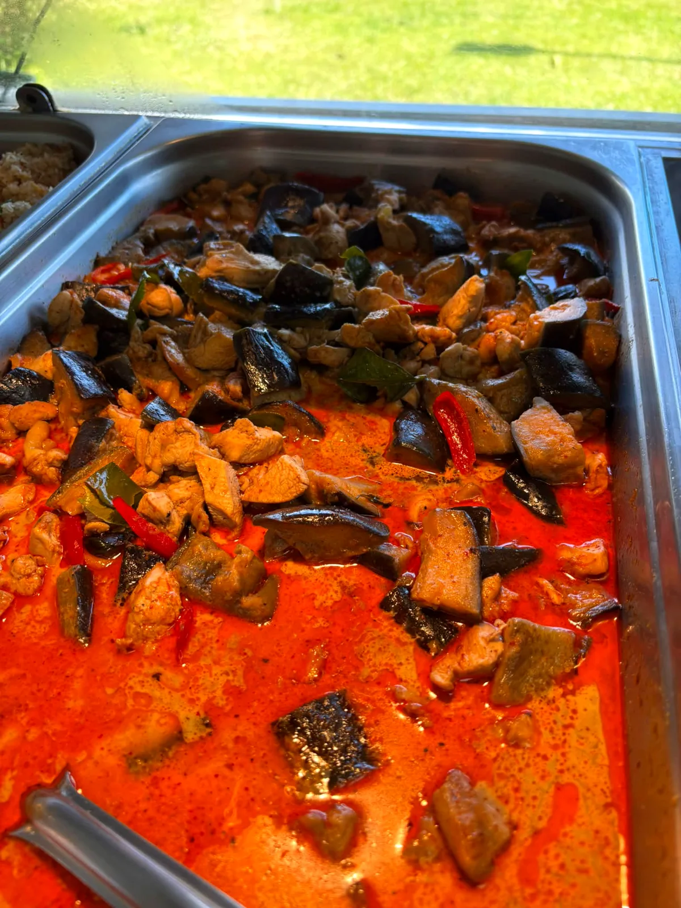
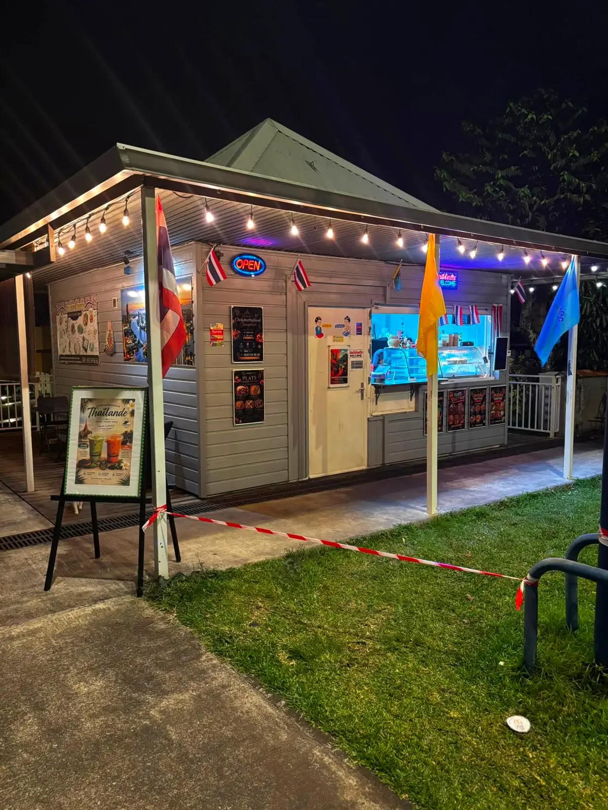
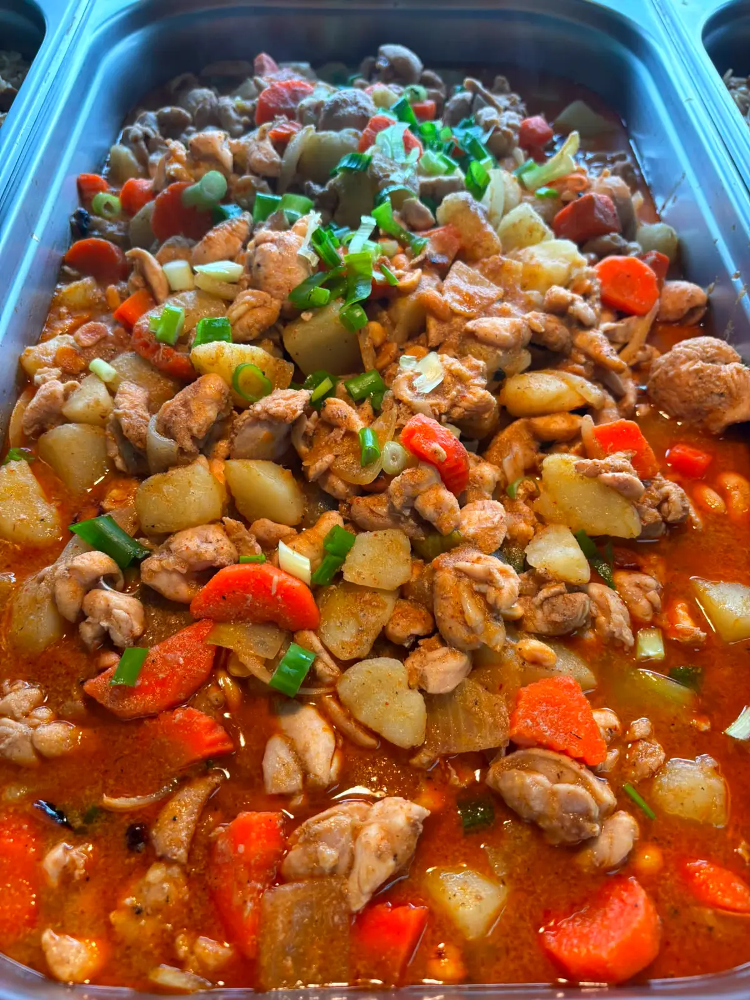
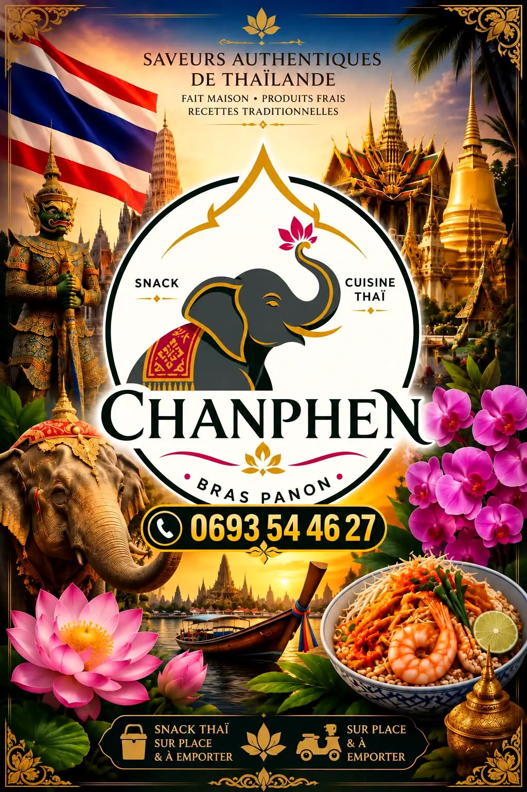
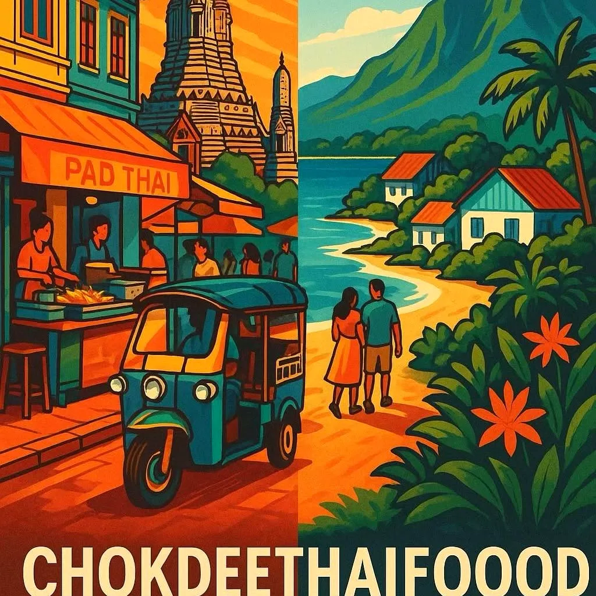

Plat du jour
Curry rouge poulet
Le curry rouge au poulet, avec son riz blanc : une sauce parfumée, des herbes fraîches, de la couleur dans l'assiette.

Snack thaï · Bras-Panon
Saveurs authentiques de Thaïlande, recettes traditionnelles, fait maison avec des produits frais. Sur place et à emporter, rue des Limites.
Le plat du jour

Le curry rouge au poulet, avec son riz blanc : une sauce parfumée, des herbes fraîches, de la couleur dans l'assiette.

De tendres morceaux de poulet, des pommes de terre fondantes, des carottes et petits légumes, mijotés dans une sauce thaï parfumée et gourmande. Servi avec son riz blanc, pour profiter jusqu'à la dernière goutte de sauce.
La carte
Une carte qui change régulièrement : le plat du jour s'annonce sur Facebook.
L'univers Chok Dee


Le kiosque
Une petite faim ?
Commande à emporter ou en livraison dans l'Est, du mardi au samedi midi.